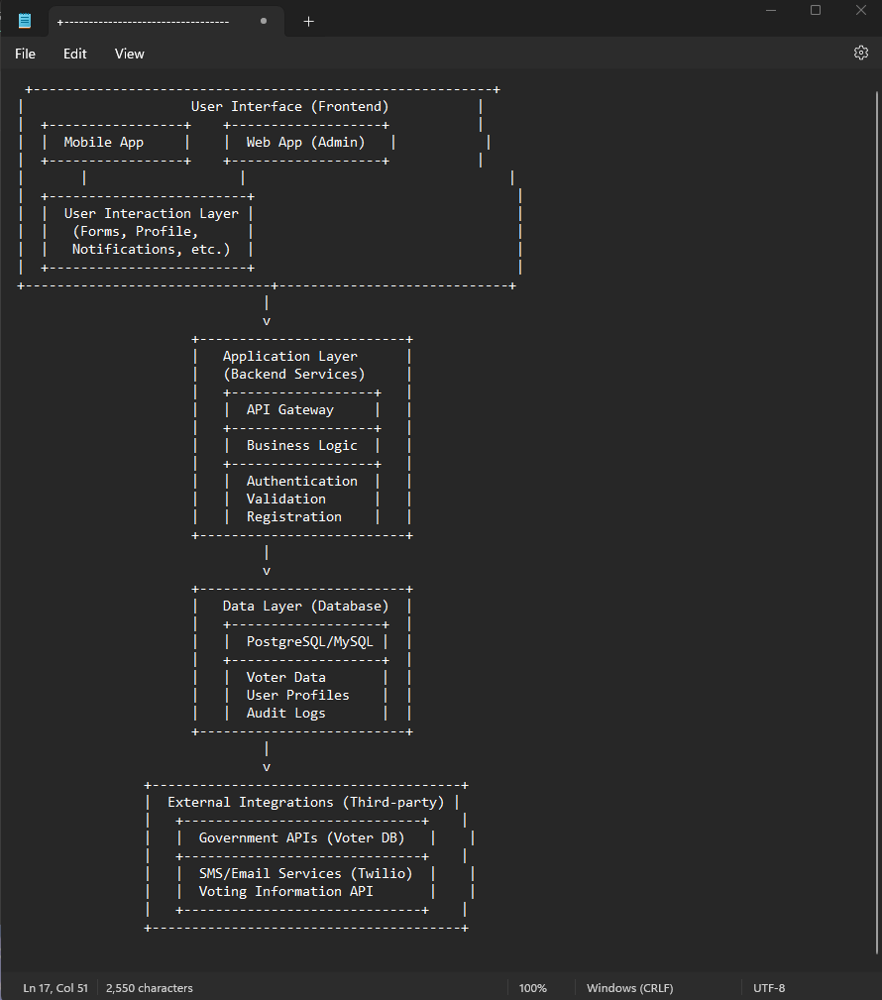
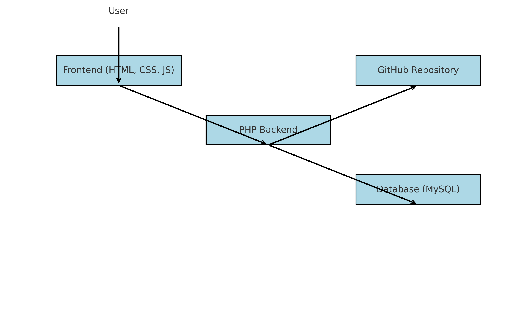
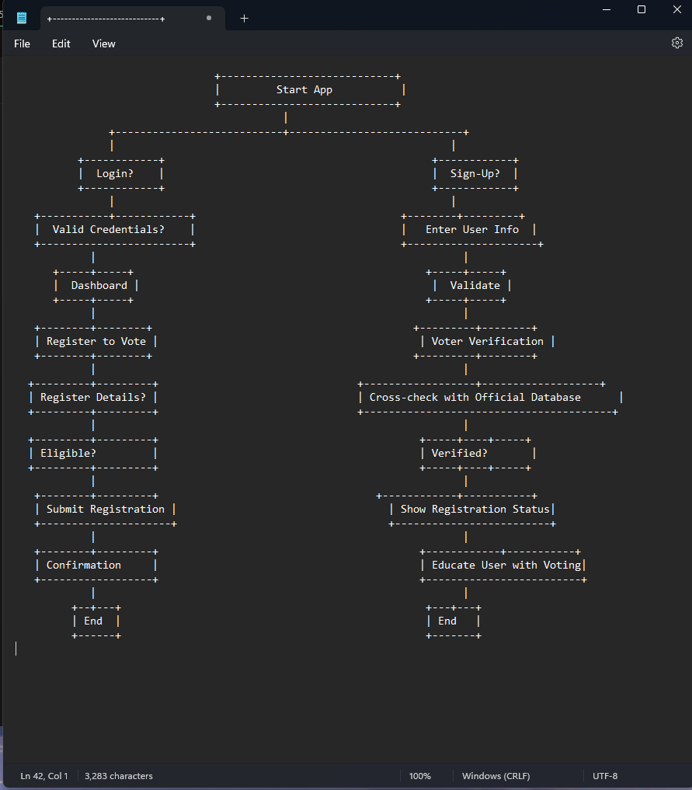

VoteSafe is a voter verification and registration application designed to enhance electoral integrity and accessibility. The project follows Christian values of stewardship, justice, and community engagement. The app streamlines voter registration, ensures accurate verification, and provides educational resources while maintaining security and privacy standards.
Below are relevant design diagrams, including system architecture, database schema, and user flow.
System Architecture  Schema  Flow Chart Key code implementations used in the project.
// Example: Database connection in PHP
$conn = new mysqli("localhost", "username", "password", "votesafe_db");
if ($conn->connect_error) {
die("Connection failed: " . $conn->connect_error);
}
// Example: Storing a vote in MySQL
$stmt = $conn->prepare("INSERT INTO votes (voter_id, candidate) VALUES (?, ?)");
$stmt->bind_param("is", $voter_id, $candidate);
$stmt->execute();
echo "Vote recorded successfully";
// Example: Fetching voter data
$result = $conn->query("SELECT * FROM voters");
while ($row = $result->fetch_assoc()) {
echo "Voter: " . $row['name'] . "
";
}
// Example: JavaScript form validation
function validateForm() {
let x = document.forms["voteForm"]["voter_id"].value;
if (x == "") {
alert("Voter ID must be filled out");
return false;
}
}
// Example: CSS Styling for the form
.form-container {
background: #f8f9fa;
padding: 20px;
border-radius: 5px;
box-shadow: 0px 0px 10px rgba(0, 0, 0, 0.1);
}
The project was developed using HTML, CSS, and MySQL for data storage. It follows a simple PHP-based server-side implementation for handling user interactions and database operations.
Technology Stack:
git clone 'https://github.com/Jordan526/VoteSAFE.git Visit GitHub Repository